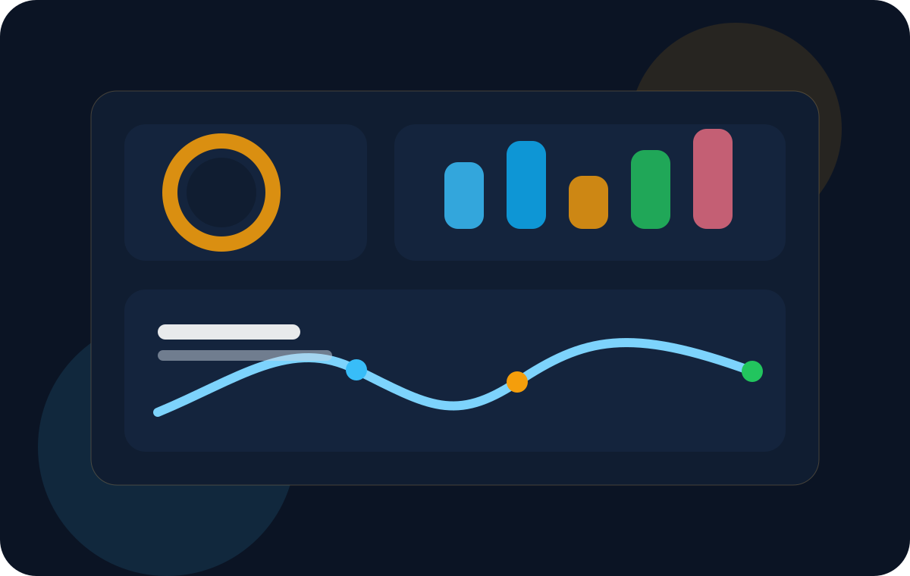
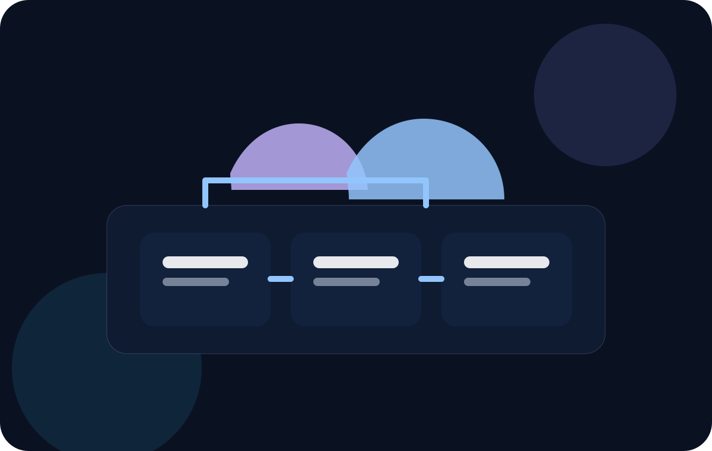
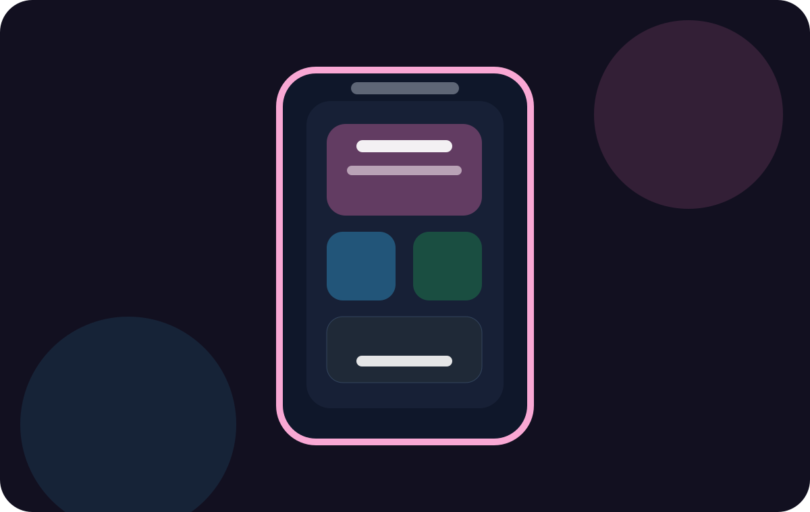

Projeto acadêmico
TechScope organiza as áreas de TI com leitura rápida, contraste forte e navegação clara.
A proposta do projeto é apresentar frentes importantes da Tecnologia da Informação sem transformar a navegação em um bloco cansativo de texto. A home funciona como um mapa visual para comparar áreas, entender o papel de cada uma e seguir para as páginas específicas com mais contexto.
- Dark mode premium
- Cards com microdescrição
- Motion suave em CSS
- Estrutura fácil de apresentar
O foco aqui não é só listar áreas, e sim deixar visível como cada frente participa de um produto digital.
Em vez de uma página genérica, o conteúdo foi organizado para mostrar responsabilidades, impacto e evolução de cada área. Isso ajuda tanto na apresentação oral quanto na percepção visual de cuidado técnico e de UX/UI.
O que este dashboard valoriza
Uma boa interface acadêmica também pode demonstrar repertório técnico sem parecer exagerada ou artificial.
- Hierarquia tipográfica forte para facilitar leitura em telas grandes e pequenas.
- Cards e seções com profundidade sutil, evitando aquele visual chapado demais.
- Componentes reaproveitáveis para manter consistência sem complicar o código.
Mapa das áreas
Páginas que aprofundam cada frente da TI
Cada card leva para uma página com resumo estratégico, competências centrais e um fluxo simples de evolução da área dentro de projetos reais.
Camada visual e interação
Explora como layout, componentes, acessibilidade e responsividade moldam a experiência final do usuário.
Abrir página
Lógica, APIs e consistência
Mostra o papel da camada que processa regras, integra sistemas e sustenta a estabilidade da aplicação.
Abrir página
Informação que apoia decisão
Resume a frente que coleta, organiza, analisa e comunica padrões úteis para negócio e produto.
Abrir página
Base operacional dos sistemas
Apresenta a sustentação técnica que mantém aplicações disponíveis, rápidas e preparadas para crescer.
Abrir páginaDefesa e continuidade digital
Explica como políticas, monitoramento e resposta a incidentes reduzem risco e preservam confiança.
Abrir página
Experiência pensada para o toque
Destaca o cuidado com fluidez, contexto de uso, limitações de tela e integração com recursos do dispositivo.
Abrir página
Pesquisa, fluxo e visual final
Mostra a área que traduz necessidades em jornadas claras, interfaces consistentes e percepção de valor.
Abrir página